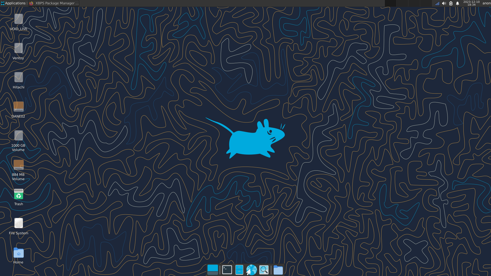

Void Linux

Void Linux is a fully independent rolling distro that deliberately avoids systemd, using runit as its init system instead. It has its own package manager (XBPS), its own build system, and is not derived from any other distro. It's a lean, no-nonsense choice for advanced users who want something outside the Debian/Arch/Fedora mainstream.
Desktop Environment
User's choice
Package Manager
XBPS
Latest Release
Rolling
Init System
runit
Support Cycle
Rolling
Architecture
x86_64, i686, ARM, musl variants
Key Features
- runit init system, extremely simple, fast boot, easy to understand
- XBPS, a fast, unique package manager not found anywhere else
- musl libc variant available for an even lighter system footprint
- Completely independent, not based on Debian, Arch, or Fedora
- No systemd, great for learning alternative init systems
- Runs well on older and low-spec hardware